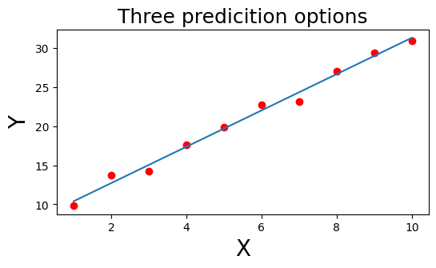
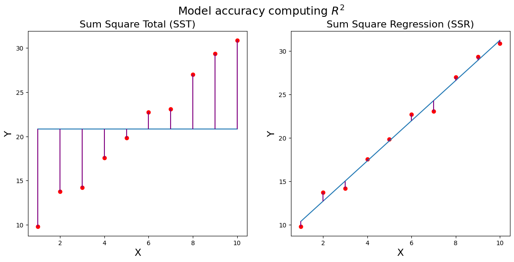
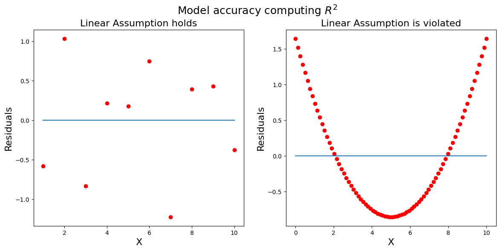
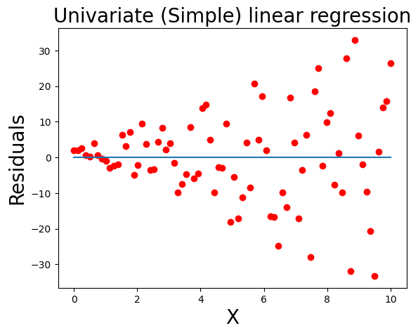
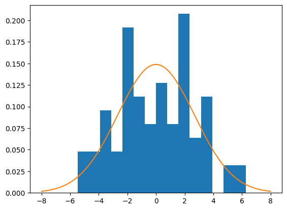
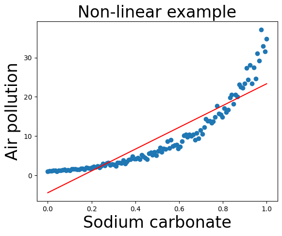
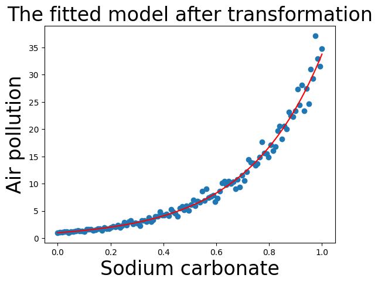

עד עכשיו למדנו לדבר על משתנה אחד: לאמוד את המרכז שלו, לבדוק עליו השערות. מהיחידה הזאת והלאה נשאל את השאלה המעניינת באמת: איך משתנה אחד משפיע על אחר? כמה שנות לימוד שוות בשכר? כמה חומר גלם מייצר כמה זיהום?
והחדשות הטובות: אנחנו לא מתחילים מאפס. כל מה שבנינו יעבוד עכשיו בשבילנו — המקדמים של הרגרסיה הם אומדים (יחידה 2) שמקבלים מבחני t ורווחי סמך (יחידה 3). זו לא תיאוריה חדשה, זו אותה תיאוריה על במה חדשה.
💡 חדש ביחידה הזאת: ווידג'טים אינטראקטיביים 🎛️
שלושה "מגרשי משחקים" מחכים לך בהמשך הדף: תזיז סליידרים ותמצא בעצמך את קו ה-OLS, תשחק עם רעש ותראה איך R² מגיב, ותפעיל טרנספורמציות בלחיצה. הדרך הכי טובה להבין — לשחק.
4.1 מה זו רגרסיה, ואיזו רגרסיה מתי
רגרסיה היא מודל שמנבא משתנה אחד (ה"מוסבר") מתוך אחרים (ה"מסבירים"). הקורס מציג שלוש משפחות, לפי סוג המשתנה שרוצים לנבא:
רוצים לנבא...
המשפחה
דוגמה מהקורס
מספר רציף
רגרסיה לינארית (אנחנו כאן)
כמות גז רעיל בתהליך כימי
כן / לא (הסתברות)
רגרסיה לוגיסטית
סיכוי לשרוד תאונת דרכים
ספירת אירועים
רגרסיית פואסון
תאונות ל-100,000 ק"מ נסועה
💡 אינטרפולציה מול אקסטרפולציה 📓 תוכן מקובץ סיכום
אינטרפולציה = חיזוי בתוך תחום הנתונים שראינו (למשל השלמת ערך חסר בין תצפיות) — בדרך כלל אמין, כי החיזוי "תחום" בין ערכים קיימים. אקסטרפולציה = חיזוי מחוץ לתחום (למשל חיזוי העתיד מנתוני העבר) — מסוכן, כי אין לנו מושג איך הנתונים מתנהגים איפה שלא ראינו אותם. תזכור את זה כשתעשה predict לערך X שרחוק מהנתונים.
4.2 המודל — קו ישר עם שגיאה
הדוגמה שתלווה אותנו: 10 עובדים, לכל אחד שנות לימוד (X, מ-1 עד 10) ומשכורת באלפי ש"ח (Y). מניחים שיש קשר של קו ישר — אבל לא מושלם:
📐 שתי המשוואות שחייבים להבחין ביניהן
$$y_i = b_0 + b_1 x_i + \varepsilon_i \qquad \text{(המשוואה האמיתית)}$$
$$\hat{y}_i = \hat{b}_0 + \hat{b}_1 x_i \qquad \text{(משוואת החיזוי שלנו)}$$
פענוח הסימנים: \(b_0\) — החותך: איפה הקו פוגש את ציר Y (המשכורת הצפויה ב"אפס שנות לימוד"). \(b_1\) — השיפוע: בכמה עולה Y על כל יחידת X (כמה שווה כל שנת לימוד). \(\varepsilon_i\) (אפסילון) — השגיאה: המרחק בין המציאות לקו, כי הקשר אף פעם לא מושלם. והכובעים? בדיוק כמו ביחידה 2 — \(\hat{b}_0,\hat{b}_1\) הם אומדים שחישבנו מהמדגם לפרמטרים האמיתיים והלא-ידועים \(b_0,b_1\).

מהשיעור: נקודות המשכורת (אדום) עם קו מותאם. בהרצאה המרצה חשף בהדרגה כמה קווים מתחרים ("Three prediction options" — למשל 5+x או 10+3x) ושאל: איזה קו הכי טוב? זו בדיוק השאלה של הסעיף הבא.
בדוק את עצמך
במודל המשכורות יצא \(\hat{b}_1=2.32\). מה הפירוש?
💬 השיפוע = השינוי ב-Y על כל יחידת X. חציית ציר Y זה החותך (\(b_0\)), ואחוז ההסבר זה R² — שניהם מושגים אחרים לגמרי. שאלות פירוש-מקדם הן לחם וחמאה של המבחן.
4.3 OLS — שיטת הריבועים הפחותים
איך בוחרים את הקו "הכי טוב"? מגדירים מה זה טוב: הקו שממזער את סכום ריבועי השגיאות — המרחקים האנכיים מהנקודות אל הקו:
📐 בעיית המזעור
$$\min_{b_0, b_1} \sum_{i=1}^{n} (b_0 + b_1 x_i - y_i)^2$$
פענוח: לכל נקודה מחשבים כמה הקו פספס אותה (\(b_0+b_1x_i-y_i\)), מרבעים, מחברים על כל הנקודות — ומחפשים את הזוג \(b_0,b_1\) שנותן את הסכום הקטן ביותר. מכאן השם: Ordinary Least Squares — הריבועים הפחותים.
💡 למה דווקא ריבוע? שתי סיבות 📓 תוכן מקובץ סיכום
1) בלי ריבוע, שגיאות חיוביות ושליליות היו מתקזזות — קו גרוע היה יכול להיראות מושלם. הריבוע (כמו בשונות, כמו ב-MSE!) מוחק את הסימן וגם "קונס" שגיאות גדולות חזק במיוחד. 2) למה לא ערך מוחלט, שגם הוא לא מתקזז? כי ריבוע הוא פונקציה גזירה — ואת המינימום מוצאים בדיוק כמו בחדו"א: גוזרים לפי \(b_0\) ולפי \(b_1\), משווים לאפס, ומקבלים נוסחה סגורה. ערך מוחלט לא גזיר באפס.
📐 הפתרון — נוסחאות סגורות
$$\hat{b}_1=\frac{\sum_{i=1}^n (x_i-\bar{x})(y_i-\bar{y})}{\sum_{i=1}^n (x_i-\bar{x})^2} \qquad\qquad \hat{b}_0=\bar{y}-\hat{b}_1\bar{x}$$
פענוח: השיפוע הוא "כמה X ו-Y זזים ביחד (המונה) חלקי כמה X זז בכלל (המכנה)". והחותך פשוט מכריח את הקו לעבור דרך נקודת הממוצעים \((\bar{x},\bar{y})\). בשיעור חישבו את זה ידנית ב-numpy וקיבלו בדיוק את מה ש-statsmodels נותן: \(\hat{b}_1=2.3178,\; \hat{b}_0=8.0825\).
🎛️ מגרש משחקים: מצא את קו ה-OLS בעצמך
הזז את הסליידרים של החותך והשיפוע. הקווים הסגולים = השגיאות שלך. נסה להקטין את ה-SSE (סכום ריבועי השגיאות) כמה שאפשר — ואז בדוק את עצמך מול הפתרון האמיתי.
בדוק את עצמך
למה ב-OLS מרבעים את השגיאות במקום פשוט לחבר אותן?
💬 שלושת היתרונות: אין קיזוז (קו שעובר "באמצע" עם שגיאות ענק לא ייראה מושלם), עונש כבד לפספוסים גדולים, וגזירוּת — שמאפשרת פתרון סגור בגזירה והשוואה לאפס. שים לב לחוט שעובר בקורס: אותו טריק ריבוע מהשונות, מ-χ² ומ-MSE.
4.4 קריאת פלט statsmodels — סעיף חובה למבחן
🎯 אזהרת מרצה 📓 תוכן מקובץ סיכום
בסיכום מודגש: "על טבלת הפלט הבאה יכולות להיות שאלות במבחן!" — וזה מתאשר: שאלה 2 במבחן לדוגמא היא בדיוק טבלת פלט עם ערכים חסרים. בוא נלמד לקרוא אותה כמו מקצוענים.
ככה נראית טבלת המקדמים של מודל המשכורות (R²=0.989, n=10):
coef
std err
t
P>|t|
[0.025
0.975]
intercept
8.0825
0.525
15.4
0.000
6.872
9.293
years
2.3178
0.085
27.4
0.000
2.123
2.513
פענוח עמודה-עמודה:
coef — האומדים: החותך 8.08 והשיפוע 2.32. זה הלב של הפלט.
std err — טעות התקן של כל אומד. 📓 תוכן מקובץ סיכום המרצה הודיע: העמודה הזאת לא נלמדת בקורס (מסומנת באפור). מספיק לדעת שהיא "כמה האומד רועד", בדיוק כמו שונות של אומד מיחידה 2.
t ו-P>|t| — כאן קורה הקסם של יחידה 3! לכל מקדם נערך אוטומטית מבחן השערות: \(H_0: b=0\) מול \(H_1: b\neq 0\). למה דווקא אפס? כי מקדם אפס פירושו שהמשתנה בכלל לא במודל — אם \(b_1=0\), שנות הלימוד לא משפיעות על המשכורת. עמודת t היא הסטטיסטי, ו-P>|t| הוא ה-p-value: קטן מ-0.05 ⇐ המקדם מובהק, יש עדות שהמשתנה באמת משפיע.
[0.025, 0.975] — רווח סמך 95% למקדם: ב-95% מהמדגמים האפשריים הרווח שנבנה כך יכיל את הערך האמיתי (הפירוש הנכון מיחידה 3.5!).
📓 תוכן מקובץ סיכום עוד הודעת מרצה: הטבלה התחתונה בפלט (Omnibus, Durbin-Watson, Skew...) — לא בחומר.
💡 הטריק ששווה נקודות: המקדם יושב בדיוק באמצע הרווח 📓 תוכן מקובץ סיכום
התפלגות t סימטרית ⇐ רווח הסמך סימטרי סביב המקדם ⇐ coef הוא תמיד אמצע הרווח. בדוק בטבלה: \((2.123+2.513)/2 = 2.318\) ✓. המשמעות: אם נותנים לך את המקדם וקצה אחד — אתה יכול לשחזר את הקצה השני. זו שאלת מבחן שהוזכרה במפורש בכיתה.
🎯 שאלה שהמרצה נתן בכיתה כדוגמת שאלת מבחן📓 תוכן מקובץ סיכום
נתון מקדם \(\hat{b}_1=2.317\) והקצה התחתון של רווח הסמך שלו: 2.123. מהו הקצה העליון?
💬 המקדם באמצע: המרחק לקצה התחתון הוא \(2.317-2.123=0.194\), ולכן הקצה העליון: \(2.317+0.194=2.511\). אפשר לדעת בלי שום מידע נוסף — הסימטריה עושה את העבודה.
🎯 שאלה 2 מהמבחן לדוגמא — טבלה עם חורים
נתונה טבלת פלט רגרסיה עם ערכים חסרים:
coef
Std err
t
P>|t|
[0.025
0.975]
intercept
0
0.5
0
0.5
-3
3
x1
10
0.25
4.1
0.001
8
12
x2
-5
0.75
?
0.003
-3
-7
x3
?
0.2
3.2
0.01
4
?
השאלה: מה יכול להיות הערך בעמודה 0.975 בשורה של x3? ענה בשאלון למטה.
🎯 שאלה 2 מהמבחן לדוגמא
מה יכול להיות הערך בעמודה 0.975 (הקצה העליון של רווח הסמך) בשורה של x3?
💬 הקצה העליון של רווח סמך חייב להיות גדול מהקצה התחתון (כאן 4). לכן: 3 נפסל (קטן מ-4), 4 נפסל (רווח ברוחב אפס — בלתי אפשרי כשיש טעות תקן חיובית), ואילו 5 ו-6 שניהם אפשריים ⇐ תשובה ו. בדיקת עקביות נוספת: p=0.01 מובהק ⇐ הרווח לא מכיל 0 ✓. ובונוס לשורת x2: את ה-t החסר משחזרים מ-\(t=coef/SE=-5/0.75=-6.67\).
⚠️ ושתי הערות חדות למבחן האמיתי: (1) בשורת x2 במבחן המקורי הגבולות מודפסים הפוך (−3 לפני −7) — הרווח האמיתי הוא \([-7,-3]\), סימטרי סביב המקדם −5 כמו שצריך. (2) בשורת x3 עמודת ה-t לא עקבית עם הרווח (3.2×0.2=0.64 ≠ אמצע רווח שמתחיל ב-4) — במבחן פותרים לפי לוגיקת הרווח בלבד. מבחנים אמיתיים מכילים לפעמים אי-דיוקים — מי שמכיר את כללי העקביות מזהה אותם ולא נבהל.
🔎 בונוס: חד-צדדי או דו-צדדי? 📓 תוכן מקובץ סיכום
בכיתה נשאל: מה צריך לדעת על \(H_1\) כדי להכריע מובהקות? תשובה: את סוג המבחן. דו-צדדי (\(H_1: b\neq 0\)) ⇐ שני אזורי דחייה של \(\alpha/2\) כל אחד; חד-צדדי (\(H_1: b>0\) או \(b<0\) — בלי שוויון ב-H1!) ⇐ אזור דחייה אחד. עמודת P>|t| בפלט היא תמיד דו-צדדית (רואים את זה בסימון: גדול מ-|t|, בערך מוחלט). ותובנה מהשיעור: אותה תוצאה יכולה להידחות במבחן אחד ולא להידחות באחר — אי-דחייה במבחן אחד לא אומרת כלום על מבחנים אחרים.
4.5 R² — כמה המודל באמת טוב?
טבלת המקדמים ענתה "האם יש קשר" (מובהקות). היא לא עונה "כמה הקו טוב". SSE=20 — זה טוב או רע? אין קנה מידה! צריך מדד מנורמל, וזה R²:
📐 R² — ההגדרה דרך שני מודלים מתחרים
$$SST=\sum_{i=1}^n (y_i-\bar{y})^2 \qquad SSR=\sum_{i=1}^n (y_i-\hat{y}_i)^2 \qquad R^2=\frac{SST-SSR}{SST}$$
פענוח: \(SST\) — סכום ריבועי הסטיות מהממוצע: השגיאות של "המודל הטיפש" שתמיד חוזה את \(\bar{y}\) בלי להסתכל על X. \(SSR\) — סכום ריבועי השגיאות של קו הרגרסיה שלנו. ו-R² שואל: כמה מהפיזור שהיה למודל הטיפש הצלחנו "לחסוך"? לכן קוראים לו אחוז השונות המוסברת.
⚠️ מלכודת הסימון של SSR — חשוב במיוחד!
בקורס שלנו \(SSR\) = סכום ריבועי השאריות. אבל ברוב הספרים והאינטרנט SSR פירושו דווקא Sum of Squares Regression (החלק המוסבר!), והשאריות נקראות SSE או RSS. אם תקרא מקור חיצוני בלי לשים לב — תקבל R² הפוך. בתוך הקורס והמבחן: SSR = שאריות.

ההמחשה המרכזית מהשיעור: משמאל — הסטיות מקו הממוצע (SST): קווים סגולים ארוכים. מימין — השגיאות מקו הרגרסיה (SSR): קווים קצרצרים. הרגרסיה "חסכה" כמעט את כל הפיזור ⇐ R²=0.989. עכשיו שחק עם זה בעצמך:
🎛️ מגרש משחקים: מה באמת קובע את R²?
הגבר את הרעש וראה איך R² צונח: ככל שהנקודות מתרחקות מהקו, ההפרש בין "שגיאות הממוצע" ל"שגיאות הרגרסיה" מצטמצם — והמודל מסביר פחות.
למה R² תמיד בין 0 ל-1? שאלה שנדונה בכיתה 📓 תוכן מקובץ סיכום: האם SSR יכול לצאת גדול מ-SST? לא! כי OLS בוחר את הקו עם השגיאות הקטנות ביותר — ובמקרה הגרוע ביותר הוא פשוט יבחר את קו הממוצע עצמו (שיפוע 0, חותך \(\bar{y}\)), ואז SSR=SST ו-R²=0. הקו שלנו אף פעם לא מפסיד למודל הטיפש.
💡 דגש מרצה: פירוש R² הוא לא מדע מדויק 📓 תוכן מקובץ סיכום
אין סף אוניברסלי ל-R² "טוב" — זה תלוי עולם תוכן: ברפואה ובמדעי החברה R² של 0.4 יכול להיחשב גבוה (בני אדם זה רועש), בעוד שבהנדסה ובמדעים מדויקים גם 0.7 עשוי להיחשב נמוך. אל תשנן סף — תבין את ההקשר.
✏️ הדוגמה הרעה מהשיעור — R² נמוך ≠ אין קשר
בשיעור הותאם קו ישר לנתונים בצורת פרבולה: יצא R²=0.369 עם שיפוע שלילי חסר משמעות. אבל הקשר בנתונים היה חזק וברור — פשוט לא לינארי! R² נמוך אומר "אין קשר לינארי", לא "אין קשר".
בדוק את עצמך
התאמנו קו לנתונים וקיבלנו R²=0.15. מה המסקנה הנכונה?
💬 R² מודד רק התאמה לקו ישר. פרבולה מושלמת תיתן R² נמוך למרות קשר דטרמיניסטי מלא. לכן תמיד מציירים את הנתונים לפני שמסיקים מסקנות — והפתרון לקשר לא-לינארי מחכה בסעיף 4.7 (טרנספורמציות).
4.6 הנחות המודל — ומה קורה כשהן נשברות
🎯 חדשות טובות: זה נמצא בדף העזר שלך!
מודל הרגרסיה + שלוש ההנחות מופיעים בתוך דף העזר שתקבל בבחינה — לא צריך לשנן, רק להבין מה כל הנחה אומרת ואיך מזהים הפרה שלה.
#
ההנחה
מה היא אומרת
איך מזהים הפרה
1
לינאריות
הקשר בין X ל-Y באמת של קו ישר
תבנית (קשת/פרבולה) בגרף השאריות
2
שונות קבועה
גודל השגיאות דומה לאורך כל טווח X
צורת משפך בגרף השאריות
3
נורמליות השגיאות
\(\varepsilon_i \sim N(0,\sigma^2)\)
היסטוגרמת השאריות לא דומה לפעמון
כלי האבחון המרכזי: גרף שאריות — מציירים את השאריות \(e_i = y_i-\hat{y}_i\) (בפייתון: results.resid) מול X. אם המודל בריא, השאריות צריכות להיראות כמו רעש טהור: מפוזרות אקראית סביב אפס, בלי שום דפוס.

מהשיעור — אבחון לינאריות: משמאל שאריות בריאות (קופצות באקראי סביב 0). מימין — פרבולה מושלמת בשאריות: הקו הישר פספס שיטתית, כי הקשר האמיתי מעוקל. למה זה נראה ככה? כשמתאימים קו ישר לעקומה, הוא "חותך" אותה — מפספס למעלה בקצוות ולמטה באמצע.

מהשיעור — הפרת שונות קבועה: השאריות מתרחבות כמו משפך ככל ש-X גדל. המודל מדייק בערכי X קטנים ורועש בגדולים — ההסקה (p-values ורווחי סמך) כבר לא אמינה.

מהשיעור — בדיקת נורמליות: היסטוגרמת השאריות (bins=15, density=True) עם עקומת פעמון מעליה. אם הצורות דומות — ההנחה סבירה. זו ההנחה הכי פחות קריטית מהשלוש.
בדוק את עצמך
בגרף השאריות רואים שהשאריות צמודות לאפס בערכי X קטנים ומתפזרות רחב מאוד בערכי X גדולים (צורת משפך). איזו הנחה מופרת?
💬 משפך = השונות של השגיאה גדלה עם X = הפרת שוויון השונויות. לינאריות מופרת נראית כתבנית מעוקלת (קשת), ונורמליות בודקים בהיסטוגרמה. שלושת הדפוסים האלה הם חומר קלאסי לשאלת זיהוי במבחן.
4.7 טרנספורמציות — כשהקשר לא לינארי
הדוגמה מהשיעור: מפעל זכוכית משתמש בנתרן פחמתי (Sodium carbonate), ורוצים לחזות את זיהום האוויר. הנתונים עולים אקספוננציאלית — ומי שמתעלם ומתאים קו ישר מקבל את זה:

מהשיעור: קו ישר על נתונים אקספוננציאליים. R²=0.821 נשמע סביר — אבל תראה את הקו: מפספס למעלה בקצוות, למטה באמצע, וחוזה זיהום שלילי בתחילת הטווח (חותך −4.46). R² לבד לא מספיק — העיניים חובה.
הפתרון: במקום לוותר על רגרסיה לינארית — מעוותים את Y עד שהקשר נהיה לינארי. הטרנספורמציות שברשימה של השיעור: \(Ln(Y)\), \(e^Y\), \(\sqrt{Y}\), \(Y^2\). 📓 תוכן מקובץ סיכום ואיך בוחרים? המרצה: בדרך כלל פשוט מנסים ומשווים; יש גם שיטה אוטומטית בשם Box-Cox שמוצאת את החזקה המתאימה ביותר.
📐 טרנספורמציית הלוג — הכוכבת
$$Ln(Y) = b_0 + b_1 X \qquad\Longleftrightarrow\qquad Y = e^{b_0+b_1X}$$
פענוח: אם Y גדל אקספוננציאלית עם X, אז הלוגריתם שלו גדל לינארית עם X — ואפשר להריץ OLS רגיל על \(Ln(Y)\). בשיעור: R² קפץ מ-0.821 (מקור) ל-0.991 (לוג); השורש נתן 0.941 — טוב יותר מהמקור, פחות מהלוג.
⚠️ Log = Ln בקורס הזה!
בסיכומים ובפלטים תראה לפעמים "Log" ולפעמים "Ln" — בקורס (וב-np.log של פייתון) הכוונה תמיד ללוגריתם הטבעי (בסיס e). מי שפותר עם לוג בבסיס 10 יקבל תשובה שגויה לגמרי (בתרגיל למטה: 0.28 במקום 0.65).
🎛️ מגרש משחקים: הפעל טרנספורמציה וראה את הקסם
בחר טרנספורמציה. משמאל — הסקלה שעליה המודל "חי" ומתאימים את הקו; מימין — המודל מתורגם חזרה לעולם האמיתי. שים לב מה קורה ל-R² ולצורת הפיזור.
תחזית אחרי טרנספורמציה — לא לשכוח לחזור!
📓 תוכן מקובץ סיכום "צריך לזכור" (במקור): המודל חוזה את \(Ln(Y)\), לא את Y! אחרי predict חייבים להפעיל את הטרנספורמציה ההפוכה — exp ללוג, ריבוע לשורש:
✏️ מהשיעור — תחזית זיהום לנתרן 0.4
שלב 1: המודל: \(Ln(\hat{Y}) = 0.0092 + 3.5103\times 0.4 = 1.4133\) — זה לוג-זיהום, לא זיהום! שלב 2: חוזרים לעולם האמיתי: \(\hat{Y} = e^{1.4133} = 4.11\) — רמת הזיהום החזויה.

מהשיעור: התחזיות של מודל הלוג אחרי exp, מצוירות על הנתונים המקוריים — העקומה האדומה עוקבת מצוין אחרי הנקודות. השווה לקו הישר הנאיבי מתחילת הסעיף.
השאלה ההפוכה — מ-Y ל-X
📓 תוכן מקובץ סיכום שאלה שנשאלה בכיתה (סגנון מבחן מובהק): תקנת בטיחות אוסרת זיהום מעל רמה 10 — מה כמות הנתרן המקסימלית המותרת? הפעם יודעים את Y ומחלצים את X:
📐 הפתרון בשלושה צעדים
$$10 = e^{0.0092+3.5103X} \;\xrightarrow{\;Ln\;}\; Ln(10) = 0.0092+3.5103X \;\Rightarrow\; X=\frac{Ln(10)-0.0092}{3.5103}=0.653$$
פענוח: מציבים את המגבלה, לוקחים לוג משני האגפים כדי "לשחרר" את X מהאקספוננט, ומבודדים. גרפית: הנקודה שבה העקומה האדומה חוצה את הקו האופקי y=10.
בדוק את עצמך
המודל: \(Ln(\hat{Y})=0.0092+3.5103X\). מהי תחזית הזיהום עבור נתרן X=0.4?
💬 המלכודת הקלאסית: 1.41 הוא \(Ln(\hat{Y})\) — תחזית בעולם הלוג. חייבים לחזור: \(e^{1.4133}=4.11\). מי שענה 0.65 התבלבל עם השאלה ההפוכה (מציאת X מ-Y=10). תמיד תשאל את עצמך: באיזה עולם המספר שקיבלתי חי?
🔎 בונוס: למה בכלל להתעקש על טרנספורמציה ולא לעבור למודל אחר? 📓 תוכן מקובץ סיכום
שאלה שנשאלה בכיתה. התשובה: כי אנחנו רוצים להישאר בעולם של OLS — תחת הנחות המודל, אומדי OLS הם הטובים ביותר מבין האומדים הלינאריים חסרי ההטיה (משפט גאוס-מרקוב), ויש להם פתרון סגור ומהיר (גזירה והשוואה לאפס). מודלים לא-לינאריים דורשים בדרך כלל אמידה איטרטיבית איטית יותר. הטרנספורמציה היא דרך "לרמות": להחזיר את הנתונים לעולם שבו הכלים הפשוטים והחזקים שלנו עובדים.
💬 p=0.74 גדול בהרבה מ-0.05 ⇐ לא דוחים את \(H_0: b_1=0\) ⇐ אין ראיה שהמשתנה תורם. שים לב לניואנס מיחידה 3: זה לא מוכיח שהוא לא משפיע — רק שאין עדות. והמודל כולו יכול להיות מצוין גם כשמשתנה אחד לא מובהק.